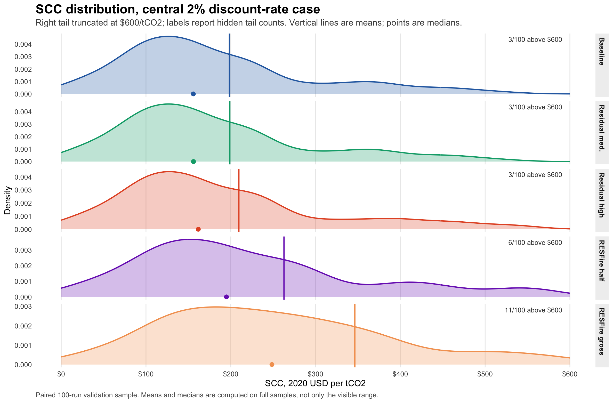
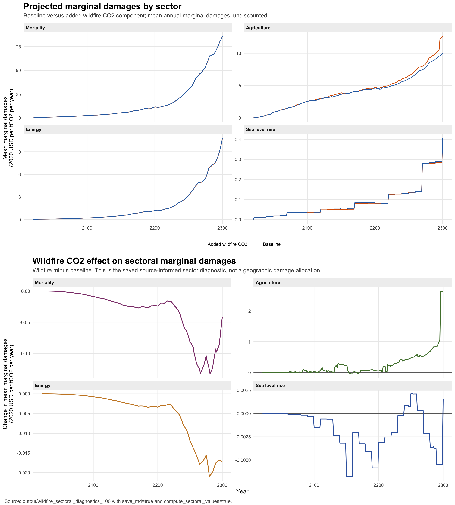
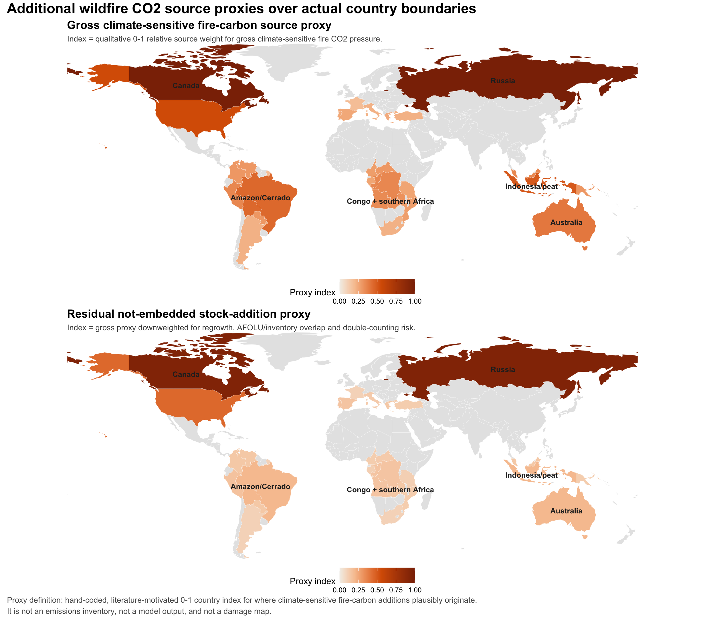
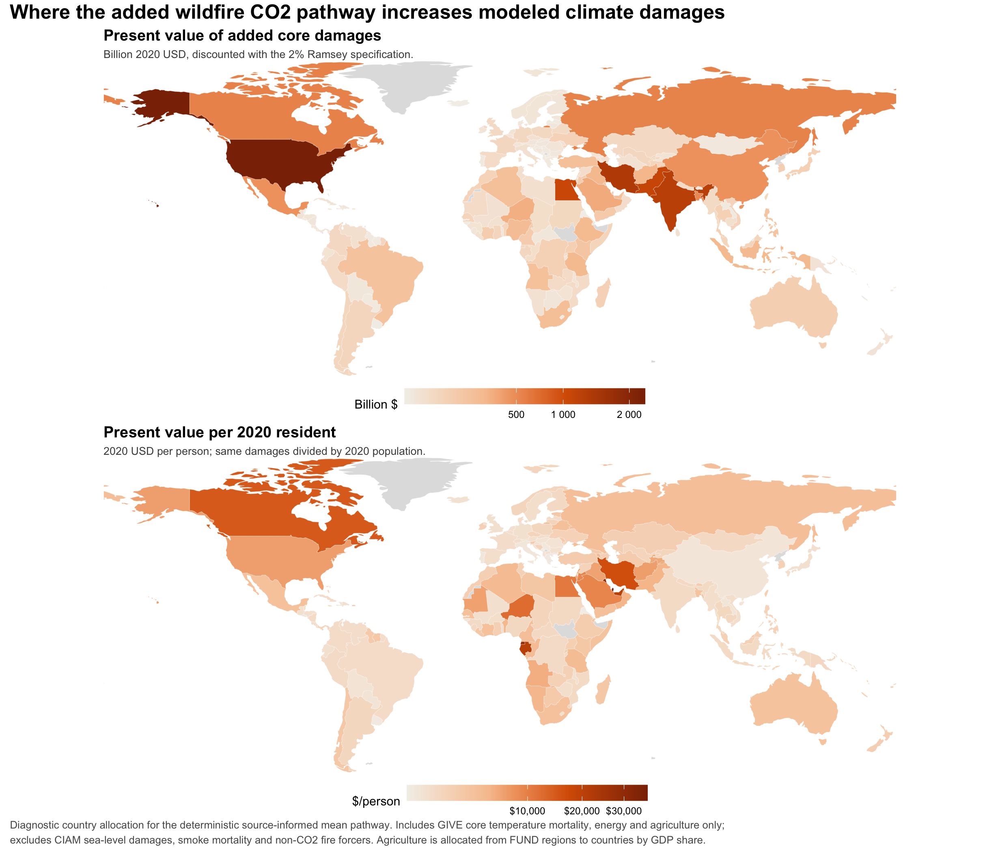
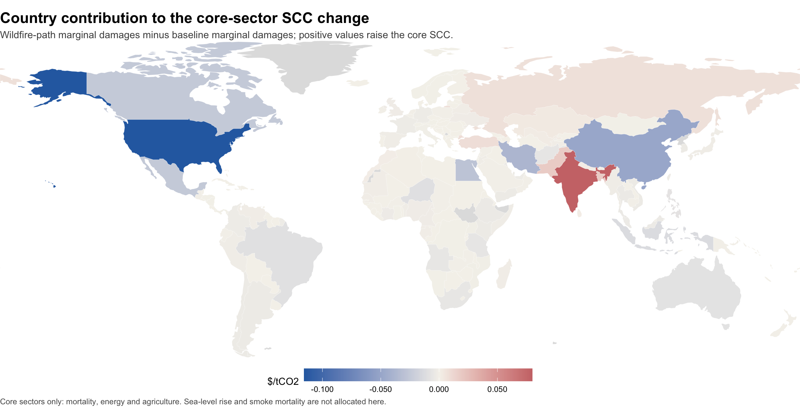

Aggregate CO2 path
RFF-SP enters as an aggregate global CO2 emissions path, without fossil, AFOLU, LULUCF or fire decomposition.
We audited the Rennert et al. GIVE replication package, found that GIVE runs on exogenous CO2, GDP and population pathways, and built a transparent first-pass extension for a warming-driven wildfire CO2 feedback.
Conservative residual wildfire-carbon feedbacks are modest in the 100-draw validation run. Gross missing fire-carbon assumptions can be large, but are not double-counting safe.
The audit does not prove every wildfire-related carbon flow is absent from baseline scenarios. It does show that the released GIVE run does not create an endogenous loop from warming to additional wildfire CO2 during the SCC pulse calculation.
RFF-SP enters as an aggregate global CO2 emissions path, without fossil, AFOLU, LULUCF or fire decomposition.
GIVE passes the aggregate CO2 path to FaIR, which handles carbon cycle, forcing and temperature response.
Warming does not internally trigger additional wildfire CO2 emissions unless that process is already embedded exogenously.
The defensible experiment is residual, net-persistent, not-already-embedded wildfire CO2, not gross fire emissions.
This panel is calibrated to the paired 100-draw GIVE outputs. It is a fast approximation for intuition, not a substitute for rerunning Julia.
Baseline samples shifted by the estimated wildfire increment.
Calibrated deterministic path scaled by the controls.
Means and percent changes are computed from paired samples. These are validation-scale results.
| Scenario | Mean SCC | Median | 5th | 95th | Change | Percent |
|---|



The source map is an assumption ledger for where added fire-carbon feedbacks plausibly originate. The damage maps show diagnostic incidence from the model outputs and do not include smoke mortality, non-CO2 fire forcing, sea-level rise or within-country inequality.


